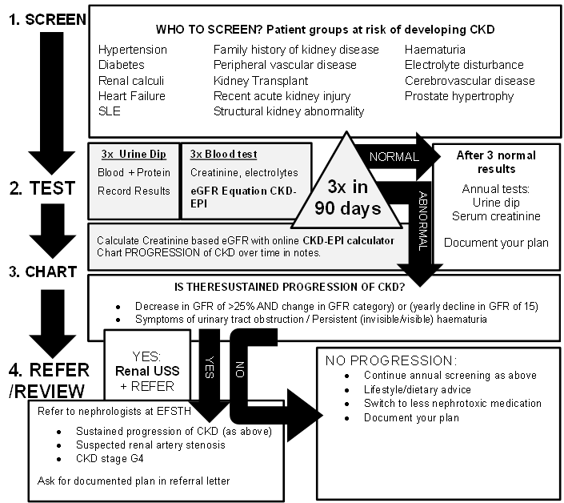

Chronic kidney disease
Executive summary
Introduction
Chronic kidney disease (CKD) is a process that may progress over years and the end point of this process is renal failure. Early detection and management of CKD improves mortality, and morbidity and delays the point where dialysis is necessary which incur significant cost to the patient in terms of life expectancy, quality of life and finances. Most patients with CKD have a stable glomerular filtration rate (GFR), but an important minority deteriorate to end stage kidney failure. The early stage of CKD is usually asymptomatic, therefore must be detected by opportunistic testing of at-risk groups or acting on incidental findings. Preventive measures may be taken to slow the progression and minimise nephrotoxicity.
Target users
· Doctors
· Nurses
Target area of use
· Outpatients
· Ward
Key areas of focus / New additions / Changes
This guideline aims to address both management of the patient in chronic kidney failure, and the early detection of CKD and minimising modifiable risks for progression.
Conservative management can be provided in accordance with the patient and with consulting the palliative care guidelines for additional advice.
Aims for CSD
· Identification of patients at risk of CKD.
· Classification of patients according to estimated GFR (or eGFR) with serum creatinine.
· Urine reagent strip (dipstick) analysis for broad quantification of kidney damage.
· Monitoring progression of CKD.
· Optimisation of pharmacotherapy and hypertension management.
· Early referral to nephrologists (at stage G4 or G3a with 3+ of protein on urine dipstick analysis)
Limitations
We cannot offer Renal Replacement Therapy (RRT)
and patients must be referred to the EFSTH hospital early, in anticipation of
deteriorating renal function, and at end stage renal failure.
Presenting symptoms and signs
Chronic kidney disease is asymptomatic in most patients until end-stage renal failure occurs.
Examination findings
Signs and symptoms of (end stage) kidney failure:
· Acid-base or electrolyte abnormalities
· Pruritis
· Serositis (pericarditis, pleuritis)
· Inability to control volume status or blood pressure (severe hypertension, pulmonary oedema)
· Progressive deterioration in nutritional status refractory to dietary intervention
· Cognitive impairment
· Anaemia
· Bone pains
· Gastritis
Management
Define ‘at risk’ patient groups:
Patients with the following conditions should be screened for chronic kidney disease with serum creatinine and urine dipstick:
· Hypertension
· Diabetes mellitus
· Cardiovascular disease
· Heart failure
· Peripheral vascular disease
· Ischaemic heart disease
· Cerebral vascular disease
· Acute kidney injury
· Family history of kidney disease
· Incidental findings of haematuria
· Multisystem disease that involves the kidney (e.g. SLE).
Current evidence does not support the screening of unselected populations.
Investigations
Serum Urea, Electrolytes and Creatinine:
Serum creatinine levels are useful for estimating glomerular filtration rate. The CKD-EPI calculation gives better estimations in the early stages of CKD. There are reliable online calculators available e.g. https://www.mdcalc.com/ckd-epi-equations-glomerular-filtration-rate-gfr
CKD is classified into 5 stages. Stages 1 and 2 are defined by good GFR, but with markers of kidney damage e.g. albuminuria, abnormalities in urine sediment, histological abnormalities, structural abnormalities detected by imaging, history of kidney transplant, and electrolyte disorders that are due to tubular disorders.
Stages 3a, 3b, 4 and 5 are defined by GFR of less than 60 ml/min/1.73m2 with or without the evidence of kidney damage.
This diagnosis must be made from at least 3 instances of investigations with at least 90 days between the first and last tests.
GFR categories |
||
|
GFR category |
GFR (ml/min/1.73 m2) |
Terms |
|
G1 |
>90 |
Normal or high |
|
G2 |
60–89 |
Mildly decreased |
|
G3a |
45–59 |
Mildly to moderately decreased |
|
G3b |
30–44 |
Moderately to severely decreased |
|
G4 |
15–29 |
Severely decreased (R) |
|
G5 |
<15 |
Kidney failure (R) |
|
Abbreviations: CKD, chronic kidney disease; GFR, glomerular filtration rate, R- refer to EFSTH |
||
Progression of CKD is the sustained decrease in GFR of 25% or more with a change in GFR category within 12 months, or a sustained decrease in GFR of 15 ml/min/1.73 m2 per year.
Dipstick Urinalysis
· Proteinuria: Test for proteinuria in patients in the at-risk groups, and patients with abnormal serum creatinine. Urine dipstick testing should occur at each appointment in patients in groups G3a –G5 (eGFR < 60 ml/min). Although urine albumin-creatinine ratio is the ideal test for proteinuria, dipstick testing of random urine samples is most practical for the OPD.
· Haematuria: The presence of 1+ or more of blood in urine is considered significant and should be investigated further. Urine microscopy is not required to test or confirm diagnosis. Invisible haematuria is confirmed with 2 out of 3 positive urine analysis dipstick tests in separate clinic appointments. Investigate patients with persistent invisible haematuria for urinary tract malignancy in the appropriate age groups. Patients with invisible haematuria with proteinuria should be followed up with annual repeat testing for as long as the haematuria continues
Haemoglobin
Check the haemoglobin level in people with a GFR of less than 45 ml/min/1.73 m2 to identify anaemia (haemoglobin less than 11 g/dl).
Serum calcium and phosphate
Low calcium and high phosphate levels may be seen in patients in end stage renal disease.
Renal ultrasound
Perform renal ultrasound if there is:
- accelerated progression of CKD
- Haematuria or persisting invisible haematuria
- Urinary tract obstruction
- Family history of polycystic kidney disease
- GFR of <30 ml/min/1.73m2 (G4 or G5)
Treatment
At all stages, it is important to involve the patient in shared decision making, discussing the implications of diagnosis and prognosis, as well as preference for invasive treatment or conservative management
Hypertension
Control systolic blood pressure in the target range of 120 - 139 mmHg and keep diastolic blood pressure below 90 mmHg. In those with diabetes, aim for tighter blood pressure control with target systolic BP of 120 – 130 mmHg and diastolic BP of < 80 mmHg. Refer to the CSD hypertension guideline for more information on controlling blood pressure.
· Single renin - angiotensin system antagonists may be used (do not combine renin - angiotensin system antagonists): these include ACE inhibitors and spironolactone.
· Monitor potassium levels and withhold treatment if Potassium >6 mmol/l.
· Check GFR when starting or increasing dose of renin - angiotensin system antagonist. A deterioration of less than 25% is acceptable. If the eGFR change is 25% or more, or the change in serum creatinine is 30% or more, investigate other causes of deterioration in renal function, such as volume depletion or concurrent medication (for example, NSAIDs).If no other cause for the deterioration in renal function is found, stop the renin–angiotensin system antagonist or reduce the dose to a previously tolerated lower dose, and add an alternative antihypertensive medication if required.
Reduce nephrotoxic medication burden:
Avoid giving the following drugs if possible:
· Antimicrobials: Vancomycin, Quinolones, Aminoglycosides
· NSAIDS, Methotrexate
· ACE- Inhibitors, Angiotensin Receptor Blocker, Renin Inhibitor
· Statins - Offer atorvastatin 20 mg for the primary or secondary prevention of CVD to people with CKD. Increase the dose if less than 40% reduction in non‑HDL cholesterol is achieved and eGFR is 30 ml/min/1.73 m2 or more. Do not give in patients with eGFR < 30 ml/min/1.73 m2.
Lifestyle advice:
· Encourage exercise, aim for healthy weight, stop smoking.
· Dietary advice regarding calorie, salt, potassium and phosphate levels appropriate to the severity of CKD.
· Low protein diet should not be recommended.
Acute Kidney Injury (AKI):
Patients with CKD are more likely to develop AKI than the normal population. AKI may also lead to progression of CKD
AKI in the background of CKD should not be managed with diuretics
The prognosis is poor for patients with AKI in end stage kidney disease. This is an emergency and should lead to an urgent referral of the patient to EFSTH following stabilisation, or conservative management.
Anaemia
Iron replacement therapy is often effective in anaemia of CKD. Erythropoietin may be needed in later stages.
Hypocalcaemia
Hypocalcaemia in patients with GFR < 30 ml/min/1.73m2 (stage G4 or G5) should be treated with cholecalciferol as hypocalcaemia results from Vitamin D deficiency.
Referral to EFSTH
Referral criteria include:
· GFR < 60 ml/min/1.73m2 AND visible/persistent invisible haematuria
· GFR < 45 ml/min/1.73m2 with at least 1+ proteinuria
· GFR < 30 ml/min/1.73m2 (category G4/G5)
· Sustained decrease in GFR of > 15 ml/min/1.73m2 over 12 months
· Sustained decrease of 25% in GFR and a change in GFR category within 12 months
· Suspected genetic or rare causes of CKD
· Suspected renal artery stenosis
· AKI with a background of End Stage CKD (emergency)
· Uraemic features such as gastritis, pericarditis, pleuritis and encephalopathy
· CKD and Hypertension refractory to treatment with 4 or more antihypertensive agents
· Nephrolithiasis
· Persistent abnormalities in serum potassium.
Referral should be made to EFSTH Nephrologist via the Accident and Emergency Department.
· Stabilise medical conditions such as hyperkalaemia, uraemic symptoms, acidosis and fluid overload before ambulance transfer.
· If possible, address correspondence to EFSTH renal physicians for referral and long-term management plan.

Key Issues for Nursing care
· Monitoring of urine output is essential.
· Daily review of fluid management.
· Oral intake is encouraged.
· Good skin care should be practiced in patients with peripheral oedema.
· Patient mobility and self-care should be actively encouraged.
· Patients should continue to eat a balanced diet, and certain foods containing high amounts of potassium, such as bananas should be avoided.
References
Kerr M, Bray B, Medcalf J et al. (2012) Estimating the financial cost of chronic kidney disease to the NHS in England. Nephrology Dialysis Transplantation. 27 (Suppl. 3): iii73–80]
National Institute for Health and Care Excellence (2015) Chronic kidney disease in adults: assessment and management Clinical guideline [CG182] (available at https://www.nice.org.uk/guidance/cg182 accessed 1/11/18)
Kidney disease improving global outcomes (KDIGO): 2012 Clinical Practice Guideline for the Evaluation and Management of Chronic Kidney Disease. (available at http://www.kdigo.org/clinical_practice_guidelines/pdf/CKD/KDIGO_2012_CKD_GL.pdf (accessed 1/11/18)
Rule AD, Larson TS, Bergstralh EJ, et al; Using serum creatinine to estimate glomerular filtration rate: accuracy in good health and in chronic kidney disease. Ann Intern Med. 2004 Dec 21;141(12):929-37.
Levey AS et al; A new equation to estimate glomerular filtration rate. Ann Intern Med. 2009 May 5;150(9):604-12.
Inker LA et al; Estimating glomerular filtration rate from serum creatinine and cystatin C. N Engl J Med. 2012 Jul 5;367(1):20-9. doi: 10.1056/NEJMoa1114248.
Boulware LE, Jaar BG, Tarver-Carr ME et al. Screening for proteinuria in US adults: a cost-effectiveness analysis. JAMA 2003; 290: 3101–3114.
White SL, Yu R, Craig JC et al. Diagnostic accuracy of urine dipsticks for detection of albuminuria in the general community. Am J Kidney Dis 2011; 58: 19–28.
Lamb EJ, MacKenzie F, Stevens PE. How should proteinuria be detected and measured? Ann Clin Biochem 2009; 46: 205–217.
|
Written by: |
Name: Thomas Sammut |
Date: 29 November 2018 |
|
Reviewed by: |
Name: Fatai Akemokwe |
Date: 04 February 2019 |
|
Version: |
Change history: |
Review due date: |
|
1.0 |
New document |
31 May 2021 |
|
Review Comments (if applicable) |
|
|